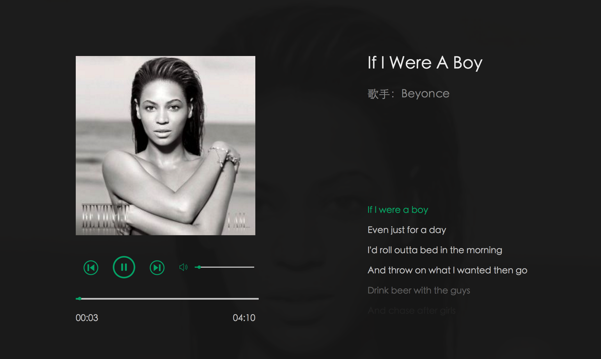

基于 Vue 的音乐播放器预览源码

-
使用技术：
Vue、 Webpack、 JavaScript、 AJAX、 HTML5
-
项目描述：
可以进行歌曲的暂停与播放，对歌曲的播放进度进行调节，并对歌词进行同步。播放上一首或者下一首时，获取的都是随机歌曲。可以进行音量的控制，满足一个基本的音乐播放器的功能。
-
实现细节：
通过 HTML5 的 audio 标签，可以将音频嵌入到 HTML 中，并通过该标签提供的一些属性和方法，可以实现开始、暂停以及对音量进行调节等功能。歌词同步可以根据当前播放的进度与歌词的时间戳来实现。将歌词放入数组中，通过 vue 的 v-for 将数组中的内容渲染到页面上，需要改变页面上的歌词时，只需要将数组的内容改变即可。
项目经验
-
今日头条首页
使用技术: jQuery、 JavaScript
用flex属性重新构造布局,得到更好的用户体验.
-
新浪新闻简页
使用技术: jQuery、 AJAX、 HTML5
通过AJAX拿到新闻数据,再通过瀑布流的方式展现出来
-
轮播图
使用技术： HTML5、CSS、 jQuery
实现全屏无限轮播功能。
-
3D旋转木马效果
使用技术：CSS3
CSS3 3D.transform 展示“旋转木马”效果
-
datepicker
使用技术： HTML5、CSS、jQuery
实现点击弹出日历界面，选择天数。
擅长技术
-
HTML
-
CSS
-
Javascript
-
jQuery
-
Vue
-
React
- HTML/HTML5
- CSS/CSS3
- Vue
- Ajax
- Requirejs
- JSONP/CORS
- jQuery
- webpack
- Git
- Linux
- 熟练使用 HTML、CSS、JS、jQuery 等主流技术进行开发。
- 熟练使用 jQuery等主流库，了解一些主流框架如 Vue。
- 理解关于跨域的内容，如 JSONP、 CORS。
- 了解常见的布局，知道盒模型，浮动定位以及 BFC 等特性。
- 了解 Vue 的使用，可以通过 webpack 进行简单的配置工作来开始Vue项的开发。
- 了解 Linux 命令行，可以通过 git 进行简单的提交工作。
- 了解 HTML5、 CSS3，有实现简单效果的经验。
- 乐于通过各个渠道了解行业新技术，阅读各类中英文文档